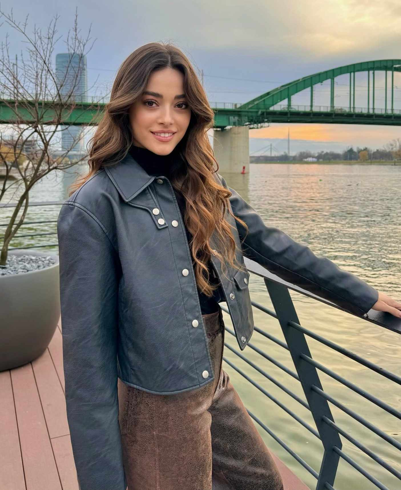

Favourite characters
Yaman Ali
My most favorite character is Yaman. He goes through everything-> gets kidnapped, lives on the streets and takes care of his friends. Then he finds his mother and has problems with his siblings. Halit always performs well in his roles. I became his fan from Kardeşlerim. I don't think any other actor could do the role of Yaman so well. He is not only very talented but also incredibly handsome. He is also a walking meme. (turkish_series11_)
My favorite character is Yaman. I love Yaman's brotherhood! He is very strong and very smart. He has suffered a lot throughout his life, now that child has grown up, even though he grew up on the street, those difficulties did not darken his heart, on the contrary, they made him stronger. He did not give up a little, no matter what. That's why he has not given up on his hopes. He knows poverty, hunger, and being despised very well, but he does not get stuck in what he has experienced, he finds a solution to everything. There is nothing impossible for him. If something happens to his friends, or rather his brothers, whom he chooses from the streets, he will give his life or take his life for them. (onurvdzs0)
I love Yaman's character so much! He has suffered a lot throughout his life, and yet he still managed to have the sweetest heart ever! I love how he cares about other people, whether they deserve it or not, he is very strong and smart, Yaman is always by his side no matter what. He is a perfect son, a perfect lover and above all, a good-hearted person. Halit plays the role of Yaman very well, he is a very talented actor. (editsmerih)
He is both a very good actor and very handsome. I love his role, how cold-blooded he is and at the same time he takes revenge on the people he loves. His love for his mother and Rüya is so strong that he would do anything for them. Magnificent. I love him! (_daqna.prv)
Rüya
It's such a great feeling to have the best person by your side... I really don't know how to express my love for Rüya and Simay. I've been a fan of Simay since 2019... I was watching the character Damla. Now we have Rüya... Rüya is a free-spirited, self-confident, stubborn and independent character. A girl who has her own truths and follows them to the end... She's really amazing! I love this girl so much. (Simay_barlass_fanpage_ / LIZI)
My favorite character in Yabani is Rüya, I really like her character, she's a girl whose family is broken up, her love with Yaman is the best in the series, I hope they overcome all the difficulties together and become very happy. (tanricabarllass)
My favorite role in the series is Rüya's. She's so sweet and plays her role very well. She also puts people in a situation. She's full of support and love for her loved ones and overall a great role in the series. (askimbarllass)
Rüya is also one of my favorites. She loves and supports Yaman sincerely. I think it's very lucky to have someone like Rüya in your life. She's so sweet and also knows what she's talking about, so she always puts people in their place. (turkish_series11_)
One of my favorite actresses! She plays uniquely. She's so nice. I'm sorry that her father hurt her so much and her mother lied to her. Even if they try to be good, she can't forget all of that. I like how she always defends Yaman, loves only him and is always by his side. She thinks the best of everyone. I love her. (_daqna.prv)
Neslihan Soysalan

Neslihan is a great role. Her life is also very difficult. Her husband poisons her with drugs and her two children hate her because they think she loves her lost child more, but it's not like that. She is a great mother who constantly thinks about her children. Yaman Ali's disappearance turned her life upside down. It's not easy for a mother to lose her child. The role wouldn't be the same if it was given to another actress. Dolunay really suits these kinds of roles. (turkish_series11_)
She plays amazing! She is a very good mother but at the same time she "neglects" her other children according to the twins. She actually loves them equally and was suffering for Yaman years ago but it's normal for a mother not to. You can see how well she acts. She doesn't show it but she suffers equally for everyone. She is the fire. She was very funny when she got drunk with Yaman and Güven and very funny when she hit Alaz and Çağla with an umbrella hahaha. (_daqna.prv)
Asi

My favorite character is Asi. She is a feisty and strong girl, she doesn't let anyone tell her what to do. She is the definition of a strong woman today. (ideal_yazgim)
My favorite character in Yabani is Asi. First of all, she is so beautiful. I love that she is a tomboy and can handle everything on her own. I love everything about her role. (_canimebru)
I feel so bad for her. She suffers so much. I feel bad for her for loving Yaman for years and running away from him. She can handle everything on her own, she takes out her knife and kills everyone who touches her. I love her. (_daqna.prv)
My favorite character in Yabani is Tuba, a strong and passionate young woman who follows her dreams. She is a person who wants justice for people and tries to help everyone. You can see this in episode 41, when she helps Yaman after he beats Cesur. Tuba is a kind, sweet and loving person.(ilaaydaszgn)
Ece

Ece is sick. After Umut's death, his heart helps Ece come back to life. He wanted to give her his heart, so that Ece would be okay. Ece is a very sweet girl and knows how to love..she loves very well. I can say that she can be Yaman's best sister. (heditsxzw)
Ece is also my favorite. There is no one sweeter than her in this series. Even before taking Umut's heart, her heart was beautiful. She is the only sister of Yaman who always supports him and never treats him badly or fights with him. She always tells the truth and is careful not to hurt anyone. She is the most sincere of the Soysalan family, she believed that her brother would come back. (turkish_series11_)
Umut

Umut was a very sweet and gentle character in Yabani. It was extremely difficult to pass. He managed to be sad when others were sad, and even when he became rich, he always had a smile on the ground. (siblings.editz11)
His role is very sweet and sad at the same time. With the same heart without any guilt. The eyes he looked at were alive. Despite everything, he was always smiling. When he was hit by a car, it increased Yaman's pain. He was aiming to buy bread for the first time in his life. (_daqna.prv)
Alaz
I really like Alaz too. Despite everything he went through in his childhood, he loves his sisters very much and is ready to give his life for them. He is not insensitive, he is just misunderstood, after Ali was kidnapped, he realized that his mother loved Ali and will always love him more, this has been shown in the series so far. He is not bad, life was just bad for him. (ideal_yazgim)
Güven

His role is very good. If she was a doctor in real life, it would be the best hahaha. I liked that he helped Alaz and saved him despite everything he did to Yaman. He swallows everything and it is obvious that he will do anything for her son. I wish they would get together with Nesli. One of the best couples of the series! (_daqna.prv)
Cesur

His role is very good. I'm tired of his buying and selling drugs for money. I feel so sad when I think about how he can't be with Çağla because of her looks and money. They are a unique couple. You can see his brotherhood with Yaman and how much he cares for him. I turn away from his so-called mother and father and how could Asi abandon them, they are not at fault. (_daqna.prv)